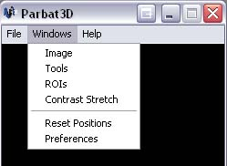
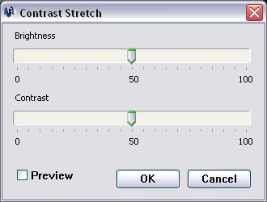

The Contrast and Brightness can be modified by opening the Contrast Stretch window. To do this, click on the 'Window' menu followed by 'Contrast Stretch'.

Adjusting Contrast and brightness will not affect the image data, nor will it affect the data or results associated with ROI's or Feature Space Scatter Plots. The purpose of Contrast and Brightness Adjustments is souly to change the visual appearance of the image.

To increase contrast or Brightness of the image, move the appropriate slider to the right and to decrease move to the left. The centre position of the sliders will display the image in its original values. Changes will not take affect until the 'OK' button is clicked.
With the preview checkbox checked, the brightness and contrast of the image will change as the sliders are moved and no extra changes will take affect once the ok button is clicked. If the cancel button is clicked, the image will return to the last applied brightness and contrast.